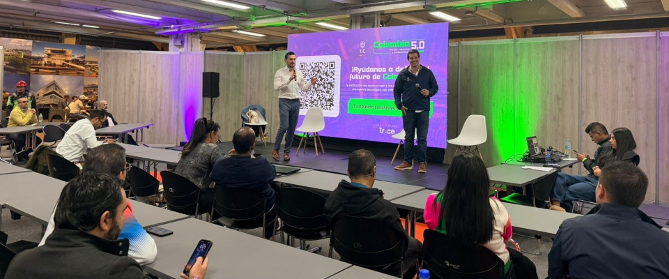

En el espacio se abordaron temas relacionados con el emprendimiento digital, las nuevas extensiones de dominio y la evolución de Internet en el contexto de la inteligencia artificial. También se explicó cómo los dominios se han convertido en mucho más que una dirección web: hoy representan identidad digital, posicionamiento y oportunidades comerciales para empresas y ciudadanos.

La identidad digital de una nación es el conjunto de características, imágenes, datos y percepciones que representan a un país en el entorno digital, es decir, en internet y en las plataformas tecnológicas. Esta identidad no se limita solo a la presencia de páginas web oficiales o redes sociales del gobierno, sino que también incluye la forma en que las empresas, instituciones, ciudadanos y medios de comunicación de ese país interactúan y se proyectan en el mundo digital.
En otras palabras, es la “imagen digital” que un país construye a través de su desarrollo tecnológico, su nivel de innovación, su infraestructura de comunicación y su participación en la economía digital global. También abarca aspectos como la educación en tecnología, la seguridad informática, la calidad del acceso a internet y la creación de contenidos digitales.
Uno de los puntos centrales de la charla fue el crecimiento de nuevas extensiones de dominios abiertas desde 2012, proceso que permitió ampliar significativamente las opciones disponibles para los usuarios en Internet. Asimismo, se resaltó que el mercado continúa evolucionando con propuestas innovadoras asociadas a inteligencia artificial, automatización y nuevos servicios digitales.